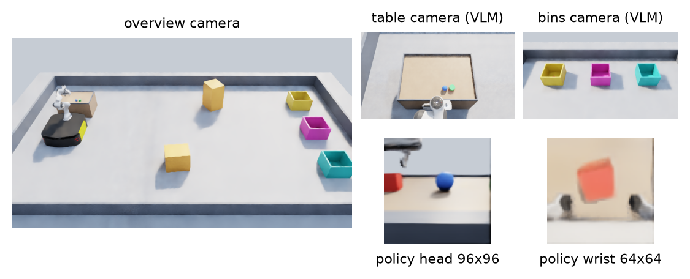
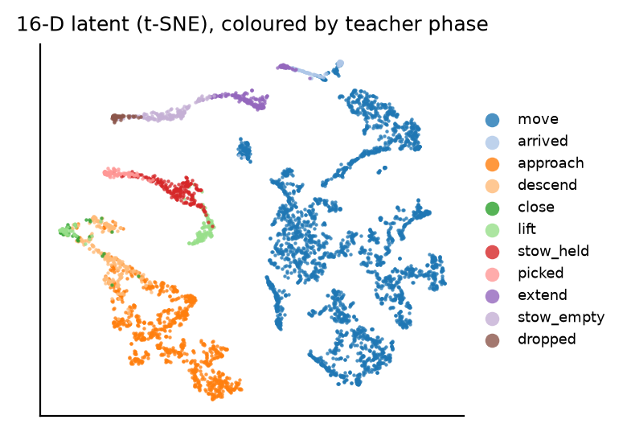
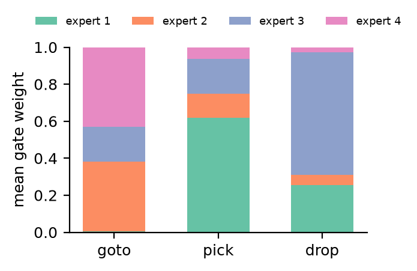

The assignment asked for a machine-vision research project with a paper, a presentation and a demo. The project asks how small a robot's visual representation can be: a policy sees the world only through two low-resolution RGB cameras, compresses what it sees into 16 numbers, and must turn those numbers into motor commands. A second question is whether a large vision-language model (Claude Opus 5.5) can sit on top of such a policy and program it from camera images.
Everything runs in NVIDIA Isaac Sim 5.1 on one workstation (RTX A2000, 12 GB). Physics is PhysX; grasps are friction only. All success numbers in this report are measured from simulator object poses, not from what the policy reports about itself.
| Component | What it is | Where |
|---|---|---|
| Mobile manipulation cell | Ridgeback base + Franka arm, pick table with a lip, two obstacles, three bins, three objects (cube, ball, puck); head and wrist cameras | src/course/scene.py |
| Six-arm relay cell | Six Franka arms passing four different shapes around a ring of trays at the same time | src/relay/ |
| Privileged teachers | Scripted controllers that read true poses; used only to label training data | src/course/skills.py, src/relay/expert.py |
| Latent MoE policy | 255k-parameter network: two image streams → spatial-softmax keypoints → 16-D latent → four gated experts → action chunks; phase head | src/lm/policy.py |
| Training pipeline | Behaviour cloning, DART noise injection, DAgger rounds, frame-quality filtering | src/lm/train_bc.py, scripts/ |
| In-simulator inference | CUDA-graph runtime with temporal ensembling of action chunks | src/lm/runtime.py |
| Opus programmer | Claude Opus 5.5 through claude -p: reads cameras and an execution log, writes and revises programs of face/goto/pick/drop | src/course/opus_programmer.py, run_opus_skills.py |
| Analysis | Latent t-SNE, keypoint overlays, gate usage, ablations, VLM verification test | src/analysis/ |

The system has three separate roles, and it is easy to blur them:
pick and drop skills.claude -p). Calls the trained skills, looks at the cameras, checks
outcomes and retries. It never sees the teacher or the training data.Teacher to student is imitation learning; student to operator is a function call. A fourth role sits outside the running system: the teacher, simulator and training code were written by the author with Claude Opus as a coding assistant. That is the same model as the operator, in a different job; see Section 8 for why that matters.
The final design is the result of several failed versions. The failures explain the design, so they are listed in order.
goto, pick and drop,
and Opus writes programs of them. Pick- and drive-focused DAgger rounds produced specialist checkpoints.goto worked with 20 % teacher help (34/36) but not alone (1/10), so the
demos use a grid planner for driving, labelled on screen as not learned.| Test | Result |
|---|---|
| Teacher, random layouts, with action noise | 67/70 deliveries |
| Monolithic policy, student executes 70 % / 88 % / 100 % of steps | 13/20 · 7/24 · 0/8 |
| Learned pick, student executes 75 % / 90 % / 100 % of steps | 57/80 · 60/80 · 14/20 |
| Learned drop (during DAgger) | 28/28 |
| Learned goto, 80 % / 100 % student | 34/36 · 1/10 |
| Full deliveries: learned pick + drop, planner goto (4 episodes × 2) | 4/8 (best episode 2/2) |
| Six-arm relay, teacher (demo footage) | 12 hand-offs in 60 s, 0 drops |


A linear head on the latent recovers the teacher's task phase on 92.5 % of held-out frames (mean of three seeds). Keypoints from the spatial-softmax layer fall on the target object, the fingertips and the table edge.
The latent is not a PCA of the pixels. PCA keeps the directions in which the images vary most, whatever causes them, such as lighting or background. The encoder here is trained jointly with the action and phase outputs, so its 16 numbers keep what is needed to act (where the object is relative to the fingers, whether it is held, which stage the task is in) and drop the rest.
| Variant | Phase accuracy | Action error |
|---|
The wrist camera carries most of the information; a 4-D latent is too small; 64-D helps slightly. These are offline numbers and were not repeated in closed loop.
Opus was asked where each of three objects was in 24 rendered scenes (72 objects). With table, bin and overview views it was
right 83 % of the time; with the overview alone, 53 %. Nearly all errors were "not visible" answers for objects
hidden by bin walls; only one answer named a wrong location. In the recorded programmer run Opus delivered the blue ball, retried
the red cube, then stopped with a wrong conclusion; afterwards it turned out that its dedicated table and bin cameras had rendered
black in that run. Note what Opus was not asked to discover: the prompt states where the table and bins are and gives
the recipe pick → face → goto → drop. Opus chooses the objects, the order, when to check and when to
retry. The robot also holds still while each call runs, which is why a two-object run takes minutes.
0.6 ms per forward pass and 1.5 ms per decision for six arms on an idle GPU; 6–15 ms inside the running simulator; about 10 s per Opus call.
The questions above test pieces in isolation. A deployment asks something simpler: given a robot, cameras and an instruction, does the object get picked up, and how long does it take? We ran the same instruction (“pick up the <colour> object”, colour cycled over red, green and blue, object positions jittered by a seeded random generator) under two conditions that share everything else: the robot, the side camera and wrist camera images, the Opus model and the per-call time limit.
pick(colour) or done; the latent policy runs the grasp
from pixels at 15 Hz (up to 20 s per attempt, three attempts).Success is read from PhysX: the commanded object is between the fingers and at least 5 cm above the table. Times are wall-clock and include Opus thinking; the robot holds still during a call.
| Condition | Successful picks | Mean time if successful | Opus calls per attempt |
|---|
H2H_TEXT
| File | Content |
|---|---|
paper/latent_vision_paper.pdf | Six-page two-column paper |
slides/latent_vision_presentation.pptx | 19 slides with figures, native charts and two embedded demo clips; speaker notes on the title slide |
deliverables/claude_vs_claude_plus_16d.mp4 | Under one minute, 30 fps: the deployment test side by side, real time then a labelled speed-up, ending on the measured results |
demo/demo_reel_30fps.mp4 | 3 min 36 s at 30 fps, real-time speed (motion-interpolated from the 15 Hz simulation): Opus programming run, best learned delivery run, six-arm teacher relay |
artifacts/*.mp4 | Individual full-length recordings, including all four unedited delivery episodes |
results/, logs/ | Raw JSON results and logs behind every number |
A live run is possible but should be introduced honestly: the learned pick succeeds about 70 % of the time, and an Opus call takes about ten seconds. Close every other GPU program first and do not start a second simulator.
cd C:\Users\mirai\latent_robot_demo
C:\isaacsim\python.bat src\course\run_opus_skills.py --goto-planner ^
--checkpoint models\skills_s2.pt --checkpoint-pick models\skills_p3.pt ^
--instruction "Put the blue ball in the teal bin." --frames artifacts\live_frames
.venv\Scripts\python.exe src\tools\encode_video.py artifacts\live_frames artifacts\live_run.mp4
The run is headless (Isaac renders off-screen); the encoded video is ready about a minute after the run ends. The pre-recorded reel is the safe fallback.
Where this fits now. Fixed, structured settings such as factory stations, warehouses and lab automation: one cell, known parts, stable lighting. A new skill costs a few hours, almost all of it simulator time for demonstrations and DAgger rounds; fitting the network itself takes minutes. Decisions take 1.5 ms on a GPU and 7.5 ms on a CPU.
What the open world needs. Much more varied scenes and objects; learned navigation (the learned driving skill succeeded 1/10 times alone here); memory or a world model, since the policy only sees the current frame; transfer from simulation to real cameras and friction; and probably a larger latent (64-D already beat 16-D offline). The split between a slow reasoning layer and a fast learned layer should carry over; the lower layer grows.
One Opus instead of two. Today the engineer (Opus as a coding assistant, writing the teacher with the author) and the operator (Opus calling skills) are separate. Merging them gives a loop in which the model is told a new task in plain language, writes a privileged teacher for it in simulation, collects demonstrations, trains a 16-D student, checks it against physics ground truth and adds it to its own toolbox before operating with it. This project has every stage of that loop except the automatic one: writing working teachers took several iterations and human corrections, and three camera faults were only found by inspecting raw frames, so a merged system would need those checks built in and a human approving each new skill.
The single most useful lesson was that the vision pipeline needs testing before the model does. Three different rendering problems (a clipping default, unfinished frames from concurrent renderers, and black cameras) each silently corrupted training or evaluation data, and each looked like a modelling failure until the raw frames were inspected. The second lesson is about scale: a 16-number policy can perform a reactive skill from pixels but cannot chain a long task on its own with this much data; splitting the work between a fast learned layer and a slow reasoning layer is what made complete deliveries possible.
# teacher data, training and DAgger for the skills (one simulator at a time)
C:\isaacsim\python.bat src\course\run_skills.py --mode expert --noise 0.3 --episodes 40 --save-data data\skills\expert
.venv\Scripts\python.exe src\lm\train_bc.py --task skills --data data\skills\expert --out models\skills_s1.pt
C:\isaacsim\python.bat src\course\run_skills.py --mode dagger --beta 0.3 --checkpoint models\skills_s1.pt --save-data data\skills\dagger1
# evaluation (student only, planner goto)
C:\isaacsim\python.bat src\course\run_skills.py --mode student --goto-planner --checkpoint models\skills_s2.pt ^
--checkpoint-pick models\skills_p3.pt --episodes 4 --deliveries 2 --start-bin-prob 0
# figures, ablations, VLM test, paper
.venv\Scripts\python.exe src\analysis\vision_figures.py
.venv\Scripts\python.exe src\analysis\result_figures.py
bash scripts\ablations.sh && bash scripts\ablations_seeds.sh
C:\isaacsim\python.bat src\analysis\vlm_states.py 24 && .venv\Scripts\python.exe src\analysis\vlm_verify.py
.venv\Scripts\python.exe paper\build_paper.py